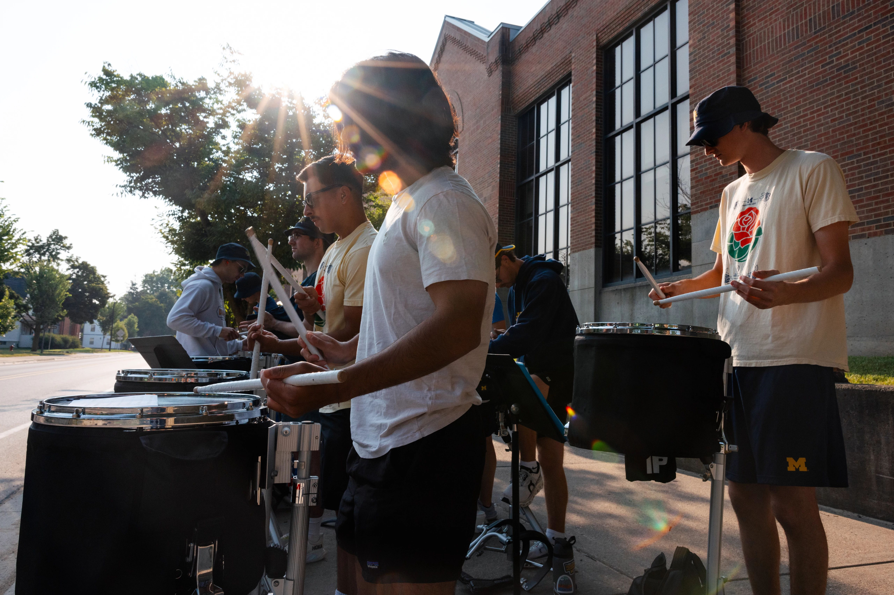

Both the University of Michigan and the local Ann Arbor community host a wide variety of events and activities for people of all ages and interests through the year. Check out some popular activities below:
U-M Student Life Events Calendar
Happening @ MichiganArts and Cultural Activites
- University Musical Society School of Music
- Theater
- Ann Arbor Symphony Orchestra
- Ann Arbor Annual Art Fair
UM Museums
- Museum of Natural History
- University of Michigan Museum of Art
- Museum of Zoology
- The Detroit Observatory